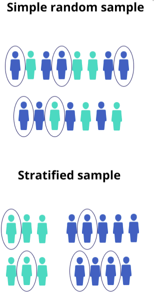
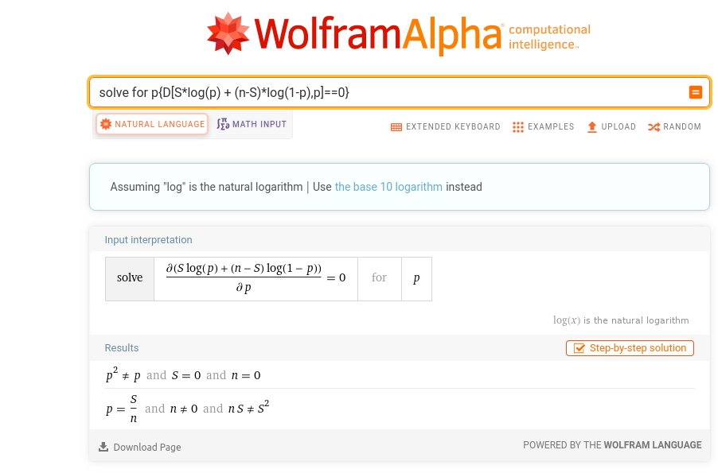
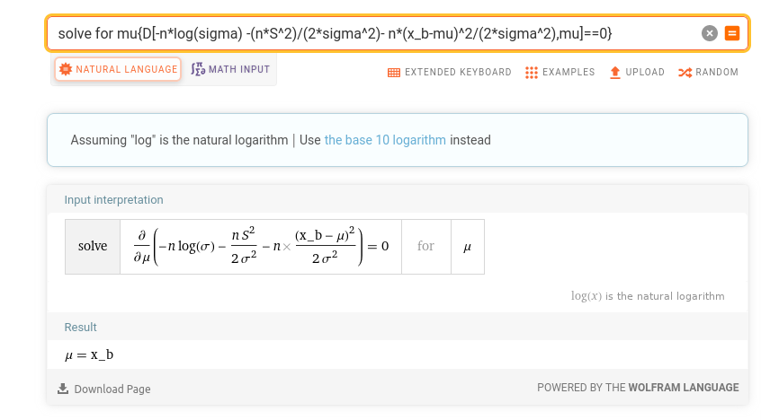
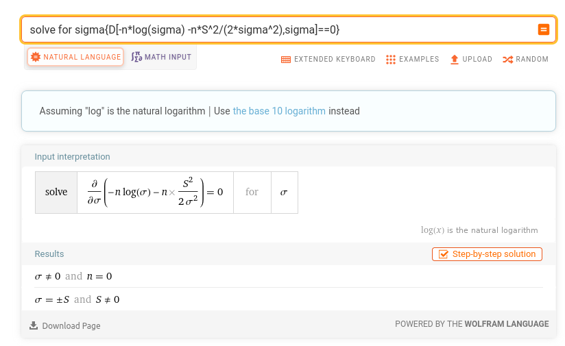
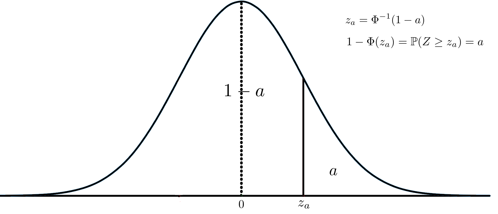
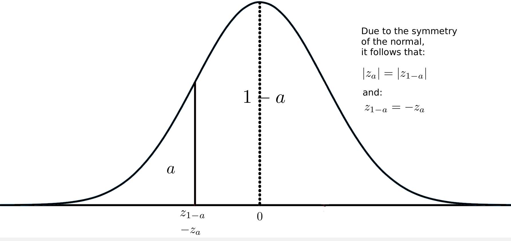
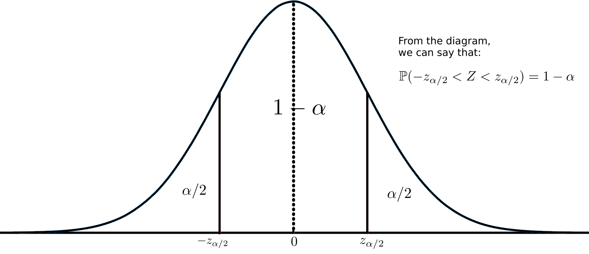
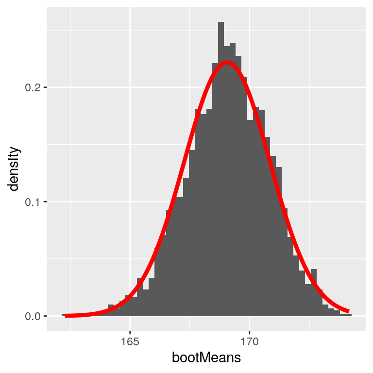
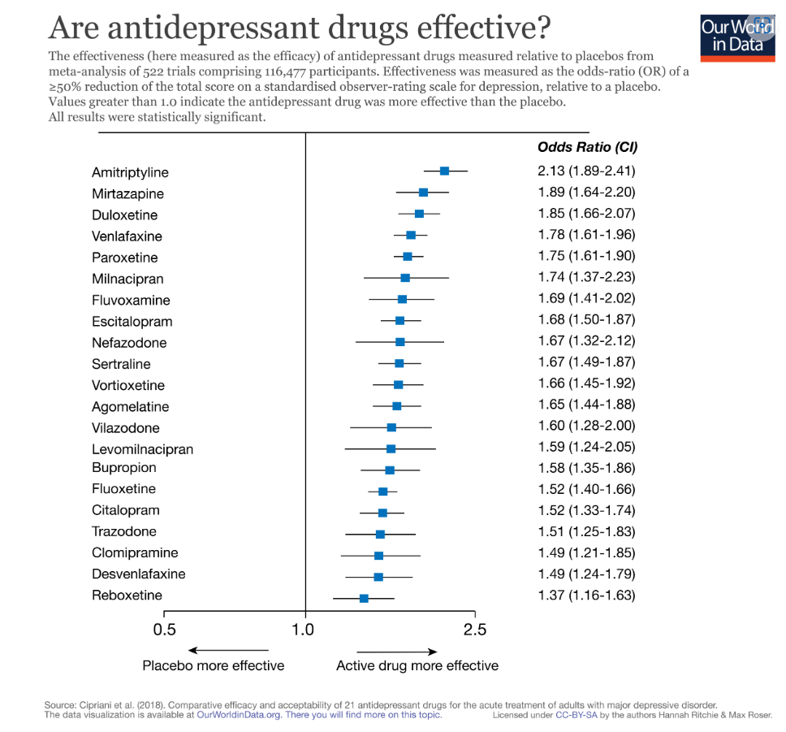

Lectura 3-1: Inferencia estadística#
Poblaciones y muestras#
El objetivo principal de la inferencia estadística es investigar propiedades sobre una población objetivo.
Una población es el conjunto de individuos que nos interesa estudiar.
Puede ser cualquier cosa, desde todos los seres humanos hasta un tipo específico de célula.
Los elementos individuales de la población a veces se denominan unidades.
Ejemplo: ¿Cuál es la altura promedio de todas las personas en Uruguay? Aquí la población son todos los habitantes de Uruguay.
Para sacar conclusiones sobre una población, generalmente no es posible reunir todos los datos sobre ella.
El caso especial en que se recopilan datos de toda la población es un censo.
En la inferencia estadística intentamos sacar conclusiones razonables sobre una población basándonos en la evidencia proporcionada por los datos de la muestra.
Una estadística muestral o simplemente estadística es una medida cuantitativa calculada a partir de una muestra.
Ejemplos: la media, la desviación típica, el mínimo, el máximo.
Ejemplo
Realizar una encuesta por muestreo puede ayudar a determinar el porcentaje de personas de una población que tienen una característica determinada.
Nielsen Media Research realiza una encuesta para poder obtener una estimación de la proporción de hogares estadounidenses que sintonizan un determinado programa de televisión.
La proporción real que Nielsen obtendría de una encuesta se denomina “parámetro de población”.
Nielsen utiliza la proporción en la muestra como una estimación de este parámetro.
Dicha estimación a partir de una muestra se denomina estadística.
Métodos de muestreo#
Nuestro objetivo en el muestreo es determinar el valor de una estadística para toda una población de interés, utilizando sólo un pequeño subconjunto de la población.
Lo hacemos principalmente para ahorrar tiempo y esfuerzo.
Una buena muestra es representativa: se parece a una pequeña versión de la población.
En la práctica, no podemos saber si una muestra es representativa, ya que no podemos obtener todos los datos de la población.
Pero sí podemos saber si un método de muestreo es bueno o no.
Un método de muestreo es sesgado si produce muestras tales que la estimación de la muestra es mayor o menor, por término medio, que el parámetro de la población que se está estimando.
Los problemas o sesgos de un método de muestreo pueden tener dos orígenes:
Sesgos#
Sesgo de selección de la muestra#
El sesgo de selección de la muestra se produce cuando las muestras tienden a dar lugar a estimaciones de los parámetros de la población que son sistemáticamente demasiado altas o demasiado bajas. Puede producirse de las siguientes formas:
Sesgo de tamaño: utilización de un método que da a las unidades más grandes una mayor chance de estar en la muestra.
Sesgo de respuesta voluntaria: dejar que las personas se ofrezcan voluntarias para estar en la muestra.
Sesgo de conveniencia: las unidades se eligen por conveniencia.
Sesgo de muestreo por juicio: selección de las unidades de muestreo basada en juicio de “expertos”. Problema: los expertos pueden pasar por alto importantes de una población.
Sesgo del marco de muestreo: un marco de muestreo es la “lista” de todas las unidades de población de las que se selecciona la muestra. La construcción de un marco de muestreo inadecuado es una causa de sesgo.
Sesgo de respuesta#
Estos tipos de sesgo se derivan del método de obtención de la respuesta.
Sesgo de falta de respuesta: a menudo, las personas se niegan a responder a una encuesta. Estas personas pueden ser diferentes de las que aceptan participar.
Sesgo de respuesta incorrecta o de medición: el sesgo puede deberse a una mentira intencionada o a un error de medición. resultado de una mentira intencionada, o provenir de dispositivos de medición inexactos, incluidos los recuerdos inexactos de las personas entrevistadas en los datos autodeclarados.
Sesgo de cuestionario: las opiniones de las personas pueden variar en función del tono de voz del entrevistador, el orden en que se formulan las preguntas y la redacción de las mismas, etc.
Muestras aleatorias#
La idea clave para construir una buena muestra es aleatorizar, es decir, dejar que el azar elija las unidades de muestreo.
La selección de la muestra por azar es el único método que garantiza la imparcialidad.
Todas las muestras posibles de un tamaño fijo dado tienen la misma probabilidad.
Se indexan todos los individuos de la población y se extraen aleatoriamente con igual probabilidad hasta alcanzar el tamaño de la muestra.
Muestreo aleatorio estratificado#
Dividimos la población en subgrupos basados en características compartidas (por ejemplo, país, ciudad) que no se solapan y que cubren todo el marco de muestreo.
Estos subgrupos se denominan estratos.
Se toma una muestra aleatoria simple para cada estrato proporcional a su tamaño.
Garantiza que cada estrato esté debidamente representado en la muestra.

Definición formal de la inferencia estadística#
El proceso de extraer conclusiones sobre una población a partir de datos muestrales se conoce como inferencia estadística.
Desde un punto de vista general, el objetivo de la inferencia es inferir la distribución que genera los datos observados.
Ejemplo: Dada una muestra \(X_1, \dots, X_n \sim F\), ¿cómo inferimos \(F\)?
Sin embargo, en la mayoría de los casos sólo nos interesa inferir alguna propiedad de \(F\) (por ejemplo, su valor medio).
Los modelos estadísticos que suponen que la distribución puede modelizarse con un conjunto finito de parámetros \(\theta= (\theta_{1},\theta_{2},\dots,\theta_{k})\) se denominan modelos paramétricos.
Ejemplo: si suponemos que los datos proceden de una distribución normal \(N(\mu,\sigma^2)\), \(\mu\) y \(\sigma\) serían los parámetros del modelo.
Enfoque Frecuentista#
Los métodos estadísticos que se presentarán en esta clase se conocen como métodos frecuentistas (o clásicos). Se basan en los siguientes postulados :
La probabilidad se refiere a frecuencias relativas límite. Las probabilidades son propiedades objetivas del mundo real.
Los parámetros son constantes fijas y desconocidas. Como no fluctúan, no se pueden hacer afirmaciones útiles sobre la probabilidad de los parámetros.
Los procedimientos estadísticos deben diseñarse para que tengan propiedades de frecuencia a largo plazo bien definidas. Por ejemplo, un intervalo de confianza del 95% debe atrapar el valor verdadero del parámetro con una frecuencia límite de al menos el 95%.
Existe otro enfoque de la inferencia denominado inferencia bayesiana, que se basa en postulados diferentes, que en una sección asincronica les compartiré.
Estimación puntual#
Definición puntual:
Sean \(X_1, \dots, X_n\) \(n\) puntos de datos IID de alguna distribución \(F\).
Un estimador puntual \(\hat{\theta}_n\) de un parámetro \(\theta\) es una función de \(X_1, \dots, X_n\): $\(\hat{\theta}_n=g(X_1, \dots, X_n)\)$
El bias de un estimador se define como:
Un estimador es no sesgado si \(\mathbb{E}(\hat{\theta}_n)=\theta\) or \(\text{bias}(\hat{\theta}_n)=0\)
Distribución de las muestras#
Si tomamos múltiples muestras, el valor de nuestra estimación estadística \(\hat{\theta}_n\) también variará de una muestra a otra.
Nos referimos a esta distribución de nuestro estimador a través de las muestras como la distribución muestral .
La distribución de muestreo puede considerarse como la distribución de \(\hat{\theta}_n\) para todas las muestras posibles de la misma población de tamaño \(n\).
La distribución de muestreo describe la variabilidad de la estimación puntual en torno al parámetro poblacional verdadero de una muestra a otra.
Debemos tener en cuenta que se trata de un concepto imaginario, ya que en situaciones reales no podemos obtener todas las muestras posibles.
De hecho, en la mayoría de los casos sólo trabajaremos con una única muestra.
Error estándar#
La desviación estándar de \(\hat{\theta}_n\) se denomina error estándar \(se\):
El error típico nos habla de la variabilidad del estimador entre todas las muestras posibles del mismo tamaño.
Es una medida de la incertidumbre de la estimación puntual.
La media muestral#
Sea \(X_1,X_2,\dots,X_n\) una muestra aleatoria de una población de media \(\mu\) y varianza \(\sigma^2\).
Supongamos que estamos interesados en estimar la media poblacional \(\mu\) (por ejemplo, la estatura media de los Colombianos).
Una estadística muestral que podemos obtener de los datos es la media muestral \(\overline{X_{n}}\):
La media muestral es un estimador puntual de la media \(\overline{X_{n}} = \hat{\mu}\).
Podemos demostrar que la media muestral es un estimador no sesgado de \(\mu\):
El error típico de la media muestral#
Error típico de la media muestral \(se(\overline{X_{n}}) = \sqrt{\mathbb{V}(\overline{X_{n}})}\) puede ser calculada como:
Entonces, $\(se(\overline{X_{n}}) = \frac{\sigma}{\sqrt{n}}\)$
La fórmula del error típico de la media implica que la calidad de nuestra medición implica dos cantidades: la variabilidad población \(\sigma\), y el tamaño de nuestra muestra \(n\).
Comentarios#
No tenemos control sobre la variabilidad de la población, pero sí sobre el tamaño de la muestra.
Por lo tanto, si deseamos mejorar nuestras estadísticas muestrales (reduciendo su variabilidad muestral), deberíamos utilizar muestras más grandes.
Sin embargo, la fórmula también nos dice algo muy fundamental sobre muestreo estadístico.
Que la utilidad de las muestras más grandes disminuye con la raíz cuadrada del tamaño de la muestra.
Esto significa que duplicar el tamaño de la muestra no duplicará la calidad de las estadísticas, sino que la mejorará en un factor de \(\sqrt{2}\).
Varianza de la muestra#
Un problema común al calcular \(se(\overline{X_{n}})\) es que, en general, no conocemos \(\sigma\) de la población.
En esos casos podemos estimar \(\sigma\) utilizando la varianza muestral \(s\): $\(s^{2}= \frac{1}{n-1} \sum_{i}^{n}(X_{i}-\overline{X_{n}})^2\)$
Se trata de un estimador insesgado de la varianza.
El error estándar de la media muestral cuando se desconoce la varianza poblacional es desconocida se puede estimar de la siguiente manera: $\(\hat{se}(\overline{X_{n}}) = \frac{s}{\sqrt{n}}\)$
Varianza de la población#
También existe la varianza poblacional, definida de la siguiente manera:
\[\sigma^{2}= \frac{1}{N} \sum_{i}^{N}(X_{i}-\overline{X_{N}})^2\]La varianza poblacional sólo debe calcularse a partir de datos población (todos los individuos).
Tenga en cuenta que estamos utilizando \(N\) en lugar de \(n\) para denotar toda la población en lugar de una muestra.
Si se calcula a partir de una muestra, sería un estimador sesgado de la varianza de la población.
La distribución muestral de la media muestral#
Ya hemos dicho que la distribución muestral es un concepto imaginario.
Imaginemos la distribución muestral de la media muestral.
Imaginemos que se extraen (con reposición) todas las muestras posibles de tamaño \(n\) de una población.
A continuación, calcule para cada muestra el estadístico muestral, que en este caso es la media muestral.
La distribución de frecuencias de esas medias muestrales sería la distribución muestral de la media (para muestras de tamaño \(n\) extraídas de esa población concreta).
En el siguiente ejemplo calcularemos la distribución muestral para un ejemplo de juguete en el que se conoce la población.
Supongamos que nuestra población entera es una familia de 5 hermanos y nuestra propiedad de interés es la edad medida en años.
Nuestra población consta de los 5 valores siguientes: 2, 3, 4, 5 y 6.
Calculemos la media poblacional \(\mu\) y la desviación estándar poblacional desviación típica \(\sigma\).
import numpy as np
# Given population
pop = np.array([2,3,4,5,6])
# Calculate mean
pop_mean = np.mean(pop)
print(pop_mean)
# Calculate standard deviation
pop_sd = np.std(pop, ddof=0)
print(pop_sd)
4.0
1.4142135623730951
Ahora, vamos a extraer las 25 posibles muestras (con reemplazo) de tamaño \(2\).
import itertools
import pandas as pd
# Given population from the previous example
pop = [2,3,4,5,6]
samp_size = 2
# Generate all possible samples with repetition
samples = list(itertools.product(pop, repeat=samp_size))
# Convert to DataFrame (similar to tibble in R)
df_samples = pd.DataFrame(samples, columns=[f'item_{i+1}' for i in range(samp_size)])
print(df_samples)
item_1 item_2
0 2 2
1 2 3
2 2 4
3 2 5
4 2 6
5 3 2
6 3 3
7 3 4
8 3 5
9 3 6
10 4 2
11 4 3
12 4 4
13 4 5
14 4 6
15 5 2
16 5 3
17 5 4
18 5 5
19 5 6
20 6 2
21 6 3
22 6 4
23 6 5
24 6 6
Podemos calcular la media muestral de cada muestra utilizando usando pandas:
# Calculate row-wise mean and add it as a new column
df_samples['sample_mean'] = df_samples.mean(axis=1)
print(df_samples)
item_1 item_2 sample_mean
0 2 2 2.0
1 2 3 2.5
2 2 4 3.0
3 2 5 3.5
4 2 6 4.0
5 3 2 2.5
6 3 3 3.0
7 3 4 3.5
8 3 5 4.0
9 3 6 4.5
10 4 2 3.0
11 4 3 3.5
12 4 4 4.0
13 4 5 4.5
14 4 6 5.0
15 5 2 3.5
16 5 3 4.0
17 5 4 4.5
18 5 5 5.0
19 5 6 5.5
20 6 2 4.0
21 6 3 4.5
22 6 4 5.0
23 6 5 5.5
24 6 6 6.0
import matplotlib.pyplot as plt
import seaborn as sns
# Given population
pop = [2, 3, 4, 5, 6]
# Create histogram using seaborn
sns.histplot(df_samples['sample_mean'], bins=9, color="blue", kde=True).set_facecolor("white")
plt.xlabel('pop')
plt.show()
Puede que haya observado que el histograma tiene un pico en el centro y es simétrico.
Esto es una consecuencia del ¡¡¡Teorema Central del Límite!!!
Podemos ver que la distribución de la población es muy diferente de la distribución muestral:
import matplotlib.pyplot as plt
data = [2, 3, 4, 5, 6]
# Creando el histograma
plt.bar(data, [1/len(data) for _ in data], align='center', alpha=0.7, width=0.5)
plt.xticks(data)
plt.xlabel('Valor')
plt.ylabel('Probabilidad')
plt.title('Histograma Equiprobable')
plt.ylim(0, 0.3) # Ajustar el eje y para que vaya de 0 a 1
plt.show()
Calculemos la media y la desviación típica de la media muestral:
# Calculate the mean and standard deviation of the sample means
mean_of_sample_means = df_samples['sample_mean'].mean()
std_of_sample_means = df_samples['sample_mean'].std()
print(f"\nMedia de las medias muestrales: {mean_of_sample_means:.2f}")
print(f"Desviación estándar de las medias muestrales: {std_of_sample_means:.2f}")
Media de las medias muestrales: 4.00
Desviación estándar de las medias muestrales: 1.02
Podemos ver que la media de la distribución muestral de la media \(\mu_{\overline{X}}\) es igual a la media poblacional \(\mu\).
También podemos calcular el error típico teórico \(se=\sigma/\sqrt{n}\)
import numpy as np
# Given population and sample size
pop = [2,3,4,5,6]
samp_size = 2
# Calculate standard deviation of population
pop_sd = np.std(pop, ddof=0)
# Calculate standard error
standard_error = pop_sd / np.sqrt(samp_size)
print(f"Desviación estándar de las medias muestrales: {standard_error:.2f}")
Desviación estándar de las medias muestrales: 1.00
Comentarios#
El teorema del límite central nos indica las condiciones en las que la distribución muestral de la media es normal o, al menos, aproximadamente normal.
Si la población de la que se toma la muestra se distribuye normalmente, entonces la distribución muestral de la media será normal, independientemente del tamaño de la muestra.
Si la población de la que se toma la muestra no es normal, la distribución muestral de la media seguirá siendo aproximadamente normal si el tamaño de la muestra es suficiente.
¿Qué tamaño es suficiente? Algunos autores dicen que 30 ó 40. Pero si la distribución de la población es extremadamente no normal (es decir, muy sesgada) necesitará más.
Estimación puntual de una proporción#
Supongamos que queremos estimar la fracción de personas que votarán por un determinado candidato.
Nuestro parámetro poblacional \(p\) corresponde a la verdadera fracción de votantes de este candidato.
Podemos modelizar una muestra de votantes independientes \(X_1, \dots, X_n\), como variables aleatorias con distribución Bernoulli y parámetro \(p\).
Interpretamos \(X_i=0\) como un voto negativo y \(X_i=1\) como un voto positivo.
La proporción muestral \(\hat{p}_{n}=\frac 1n \sum_{i}X_{i}\) es nuestro estimador de \(p\).
Entonces \(\mathbb{E}(\hat{p}_{n})= \frac 1n \sum_i \mathbb{E}(X_i)=p\), y \(\hat{p}_n\) es no sesgada
El error estándar \(se\) sería
El error estándar estimado \(\hat{se}\):
Por el Teorema Central del Límite, la distribución muestral de la proporción muestral converge a una distribución normal:
Esto se debe a que la proporción muestral es en realidad la media muestral de una población binaria.
Consistencia#
Se espera que un buen estimador sea insesgado y tenga un error estándar mínimo.
Antes se prestaba mucha atención a la insesgadez, pero hoy en día se considera menos importante.
Muchos de los estimadores que utilizaremos son sesgados.
Un requisito razonable para un estimador es que converja al verdadero valor del parámetro a medida que recogemos más y más datos.
Un estimador puntual \(\hat{\theta}_n\) de un parámetro \(\theta\) es consistente si converge al valor verdadero cuando el número de datos de la muestra tiende a infinito.
Teorema:
Si para un estimador \(\hat{\theta}_n\), con \(bias \rightarrow 0\) y en \(se \rightarrow 0\) cuando \(n\rightarrow \infty\), \(\hat{\theta}_n\),es un estimador consistente de \(\theta\).
Por ejemplo, para la media muestral \(\mathbb{E}(\overline{X_{n}})=\mu\), lo que implica que el \(bias =0\).
Entonces \(se(\overline{X_{n}}) = \frac{\sigma}{\sqrt{n}}\) converge a cero cuando \(n\rightarrow \infty\).
\(\overline{X_{n}}\) es un estimador consistente de la media.
Para el caso del experimento de Bernoulli se tiene que \(\mathbb{E}(\hat{p})=p \Rightarrow bias=0\) y \(se = \sqrt{p(1-p)/n} \rightarrow 0\) cuando \(n\rightarrow \infty\).
Entonces \(\hat{p}\) es un estimador consistente de \(p\).
Estimación de máxima verosimilitud#
Los estimadores que hemos presentado hasta ahora (por ejemplo, la media muestral, la proporción muestral) son intuitivos, fáciles de calcular y coherentes.
La estimación de máxima verosimilitud (MLE) es un marco más general para estimar los parámetros de cualquier modelo paramétrico.
En los EMV, suponemos que los datos de la muestra son generados por una determinada distribución de probabilidad (continua o discreta) parametrizada por \(\theta\) e intentamos encontrar el valor de \(\theta\) que maximiza la probabilidad conjunta de los datos bajo esa distribución.**
Idea: encontrar los valores de los parámetros del modelo estadístico supuesto que hacen más probables los datos observados.
Por ejemplo, podemos suponer que cada punto de datos es generado por \(N(\mu,\sigma^2)\), entonces calculamos la FDP conjunta (o FMP) de nuestros datos y encontrar los valores de los parámetros para \(\mu\) y \(\sigma\) que maximizan esa densidad conjunta (o masa).
Los estudiantes que aprenden estadística suelen preguntarse: ¿cómo podemos saber que la distribución que generó los datos está en algún modelo paramétrico?
Hay casos en los que los conocimientos previos sugieren que un modelo paramétrico proporciona una aproximación razonable.
Ejemplo 1: los experimentos binarios independientes (por ejemplo, lanzar una moneda o votar a un candidato) pueden representarse adecuadamente con distribuciones Bernoulli o Binomial.
Ejemplo 2: se sabe por experiencia previa que el recuento de accidentes de tráfico sigue aproximadamente una distribución de Poisson.
En muchos otros casos son preferibles los métodos no paramétricos, pero están fuera del alcance de este curso.
Definición Estimación de Máxima Verosimilitud#
Sea \(X_1,\dots,X_n\) IID con FDP (o FMP) \(f(x;\theta)\).
Dado que suponemos que nuestras muestras de datos son variables aleatorias independientes, la densidad conjunta (o masa) sería el producto de cada FDP (o FMD): $\(\mathcal{L}_{n}(\theta)=\prod_{i=1}^nf(X_i;\theta)\)$
Nos referimos a esta densidad conjunta (o masa) como la función de verosimilitud.
La función de verosimilitud no es más que la densidad (o masa) conjunta de los datos, excepto que la tratamos como una función del parámetro \(\theta\).
En EMV, convertimos la tarea de estimación en un problema de optimización:
\[ \max_{\theta} \quad \mathcal{L}_{n}(\theta) \]
El estimador de máxima verosimilitud MLE, denotado por \(\hat{\theta}_n\), es el valor de \(\theta\) que máximiza \(\mathcal{L}_{n}(\theta)\).
En muchos casos la verosimilitud logarítmica es más fácil de optimizar \(l_n(\theta)\):
\[l_n(\theta) = \log(\mathcal{L}_{n}(\theta))=\log(\prod_{i=1}^nf(X_i;\theta))= \sum_{i=1}^{n}\log(f(X_i;\theta))\]Dado que el logaritmo es una función monótona, el máximo de se produce en el mismo valor de \(\theta\).
Si \(l_n\) es diferenciable podemos hallar \(\hat{\theta}_n\) poniendo las derivadas a cero:
el EMV tiene muchas buenas propiedades matemáticas que van más allá del discutir en este curso.
Algunas propiedades que vale la pena conocer son que la MLE es consistente y es asintóticamente normal (es decir, su distribución muestral converge a una gaussiana).
Ejemplo 1:
Supongamos que \(X_1,\dots, X_n \sim\) Bernoulli \((p)\).
La función de masa de probabilidad es \(f(x;p)= p^x(1- p)^{1-x}\) para \(x = 0,1\). El parámetro desconocido es \(p\).
Entonces,
Donde, \(S=\sum_{i}X_i\). Así,
Tomar la derivada de \(l_n(\theta)\), establecerlo igual a 0 para encontrar que el EMV es \(\hat{p}_n =S/n\), que es la proporción de la muestra.
Esto se puede comprobar pegando la siguiente fórmula en WolframAlpha:

Ejemplo 2:
Sea \(X_1,\dots, X_n \sim N(\mu,\sigma^2)\).
El parámetro es \(\theta=(\mu,\sigma)\) y la función de verosimilitud (ignorando algunas constantes) es:
Donde \(\overline{X}=\frac{1}{n}\sum_{i=1}^nX_i\) es la media muestraly \(S^2 = \frac{1}{n}\sum_{i=1}^n(X_i-\overline{X}^2)\).
La última igualdad se deduce del hecho de que $\(\sum_{i=1}^n(X_i -\mu)^2=nS^2+n(\overline{X}-\mu)^2\)$
que puede verificarse escribiendo
y luego ampliar el cuadrado.
La probabilidad logarítmica es:
Resolver las ecuaciones $\(\frac{\partial l_n(\mu,\sigma)}{\partial \mu} = 0\)$
y
Concluimos que \(\hat{\mu} = \overline{X}\) y \(\hat{\sigma}=S\).
Puede comprobarse que se trata efectivamente de máximos globales de la probabilidad.
Estimación de máxima verosimilitud#
Verifiquemos esto usando WolframAlpha:

Ahora, si sustituimos \(\mu\) por \(\overline{X}\), la última expresión de \(l_n\) se anula.
el valor de \(\sigma\) se puede obtener de la siguiente manera:

Intervalo de confianza#
Sabemos que el valor de un estimador puntual varía de una muestra a otra a muestra.
Es más razonable encontrar un intervalo que probablemente atrape el valor real del parámetro a largo plazo.
La forma general de un intervalo de confianza en la siguiente:
Cuanto más amplio es el intervalo, mayor es la incertidumbre sobre el valor del parámetro.
Definición
Un intervalo de confianza para un parámetro poblacional desconocido \(\theta\) con un nivel de confianza \(1-\alpha\), es un intervalo \(C_n = (a,b)\) donde:
Donde \(a= a(X_1, \dots, X_n)\) y \(b=b(X_1,\dots,X_n)\) son funciones de los datos.
El valor \(\alpha\) se conoce como el nivel de significación, generalmente \(0.05\), lo que equivale a trabajar con un nivel de confianza del de confianza del \(95\%\).
La significación estadística ayuda a cuantificar si un resultado se debe probablemente al azar o a algún factor de interés.
Básicamente, un resultado estadísticamente significativo es un resultado que no es atribuible al azar.
Discusión#
Hay mucha confusión sobre cómo interpretar un intervalo de confianza.
Un intervalo de confianza no es una declaración de probabilidad sobre \(\theta\) ya que \(\theta\) es una cantidad fija en la inferencia frecuentista, no una variable aleatoria.
Una forma de interpretarlos es decir que si repetimos el mismo experimento muchas veces, el intervalo contendrá el valor del parámetro \((1-\alpha)\%\) de las veces.
Esta interpretación es correcta, pero rara vez repetimos el mismo experimento varias veces.
Una interpretación mejor: un día que recojo datos creo un \(95\%\) para un parámetro \(\theta_1\). Luego, el día 2, hago lo mismo para un parámetro \(\theta_2\) y así repetidamente \(n\) veces. El \(95\%\) de mis intervalos contendrán los valores reales de los parámetros.
En una sección asincronica hablaremos de los métodos bayesianos en los que tratamos \(\theta\) como si fuera una variable aleatoria y hacemos afirmaciones de probabilidad sobre \(\theta\).
Intervalo de confianza de la media muestral#
Queremos encontrar un intervalo \(C_n = (\mu_1,\mu_2)\) con un nivel de confianza \(1-\alpha\):
\[\mathbb{P}(\mu_1 \leq \mu \leq \mu_2 ) = 1-\alpha\]Entonces \(z_a = \Phi^{-1}(1-a)\), con \(a \in [0,1]\) donde \(\Phi^{-1}\) es la función cuantil de una normal estandarizada.
Esto equivale a decir que \(z_a\) es el valor tal que \(1-\Phi(z_a)=\mathbb{P}(Z \geq z_a)=a\).
Por simetría de la distribución normal: \(z_{\alpha/2}=-z_{(1-\alpha/2)}\).



Intervalo de confianza de la media muestral
El intervalo de confianza para \(\mu \) es:
Entonces \(z_{\alpha/2} \) nos dice cuántas veces tenemos que multiplicar el error estándar para construir el intervalo.
Cuanto menor sea el valor de \(\alpha \), mayor será el valor de \(z_{\alpha/2} \) y, por tanto, más amplio será el intervalo.
Prueba:
\[ \mathbb{P}(\mu \in C_n) = \mathbb{P}(\overline{X_{n}}-z_{\alpha/2}\frac{\sigma}{\sqrt{n}} < \mu < \overline{X_{n}} + z_{\alpha/2}\frac{\sigma}{\sqrt{n}}) \]\[ = \mathbb{P}(-z_{\alpha/2} < \frac{\overline{X_{n}}-\mu}{\frac{\sigma}{\sqrt{n}}} < z_{\alpha/2}) \]\[= \mathbb{P}(-z_{\alpha/2} < Z < z_{\alpha/2}) \]\[ = 1-\alpha \]Dado que \(z_{\alpha/2} = \Phi^{-1}(1-\alpha/2) \) podemos usar la función cuantil de la normal para calcular intervalos de confianza en python.
from scipy.stats import norm
import numpy as np
# Define variables
alpha = 0.05
xbar = 5
sigma = 2
n = 20
# Calculate standard error
se = sigma / np.sqrt(n)
# Calculate margin of error
error = norm.ppf(1 - alpha/2) * se
# Calculate confidence interval
left = xbar - error
right = xbar + error
print(left)
print(right)
4.123477459423419
5.876522540576581
Distribución T#
En la práctica, si no conocemos \(\mu\) es poco probable que conozcamos \(\sigma\).
Cuando se supone que los datos son normales y estimamos \(\sigma\) utilizando \(s\), los intervalos de confianza para la media muestral se construyen mejor utilizando la distribución T-student, especialmente cuando el tamaño de la muestra es pequeño.
Un V.A. tiene distribución \(t\) con \(k\) grados de libertad cuando tiene la siguiente FDP:
Cuando \(k=1\) se llama distribución Cauchy.
Cuando \(k\rightarrow \infty\) converge a una distribución normal estandarizada.
La distribución \(t\) tiene colas más anchas que la distribución normal cuando tiene pocos grados de libertad (es decir, es más propensa a producir valores que caen lejos de su media).
import numpy as np
import matplotlib.pyplot as plt
from scipy.stats import norm, t
# Define the x values
x = np.linspace(-8, 8, 400)
# Calculate the pdf values for the normal and t distributions
y1 = norm.pdf(x)
y2 = t.pdf(x, df=1)
y3 = t.pdf(x, df=10)
y4 = t.pdf(x, df=350)
# Plot the distributions
plt.plot(x, y1, color="green", label="Normal")
plt.plot(x, y2, color="blue", label="t, df=1")
plt.plot(x, y3, color="black", label="t, df=10")
plt.plot(x, y4, color="red", label="t, df=350")
# Add legend and show plot
plt.legend()
plt.show()
Distribución T: algunas curiosidades#

La distribución T fue desarrollada por el estadístico inglés William Sealy Gosset bajo el seudónimo de “Student”.
Gosset trabajaba en la fábrica de cerveza Guinness de Dublín (Irlanda) y se interesó por los problemas de las muestras pequeñas.
Por ejemplo, las propiedades químicas de la cebada, donde el tamaño de las muestras podían ser tan pequeñas como tres.
El empleador de Gosset prefería que sus empleados ocultaran su identidad cuando publicaban artículos científicos.
Otra versión es que Guinness no quería que sus competidores supieran que utilizaba la prueba t para determinar la calidad de la materia prima .
Intervalo de confianza de la distribución T#
Sea \(s^{2}= \frac{1}{n-1} \sum_{i}^{n}(X_{i}-\overline{X_{n}})^2\) tenemos:
Sea \(t_{n-1,a}=\mathbb{P}(T>a)\), equivalente a la función cuantil \(qt\) evaluated at \((1-a)\).
El intervalo de confianza resultante es: $\(C_n = (\overline{X_{n}}-t_{n-1,\alpha/2}\frac{s}{\sqrt{n}} , \overline{X_{n}} + t_{n-1,\alpha/2}\frac{s}{\sqrt{n}})\)$
Dado que las colas de la distribución \(t\) son más anchas cuando \(n\) es pequeño, los intervalos de confianza resultantes son más amplios.
Calculemos un intervalo de confianza para la media de Longitud.Pétalos de los datos del Iris con una confianza del \(95\%\).
import numpy as np
import seaborn as sns
from scipy.stats import t
# Load the iris dataset
iris = sns.load_dataset('iris')
# Parameters
alpha = 0.05
# Calculate sample properties
n = len(iris['petal_length'])
xbar = np.mean(iris['petal_length'])
s = np.std(iris['petal_length'], ddof=1) # Note the ddof=1 to get sample standard deviation
se = s / np.sqrt(n)
# Compute the t-critical value and margin of error
t_critical = t.ppf(1 - alpha/2, df=n-1)
error = t_critical * se
# Calculate the confidence interval
left = xbar - error
right = xbar + error
print("Sample Mean:", xbar)
print("Left boundary:", left)
print("Right boundary:", right)
Sample Mean: 3.7580000000000027
Left boundary: 3.4731853701995132
Right boundary: 4.0428146298004926
De otra manera:
import numpy as np
from scipy.stats import t
confidence_level = 0.95
degrees_freedom = len(iris['petal_length']) - 1
sample_mean = np.mean(iris['petal_length'])
sample_standard_error = np.std(iris['petal_length'], ddof=1) / np.sqrt(len(iris['petal_length']))
confidence_interval = t.interval(confidence_level, degrees_freedom, sample_mean, sample_standard_error)
print("95% Confidence Interval:", confidence_interval)
95% Confidence Interval: (3.4731853701995132, 4.0428146298004926)
Intervalo de confianza para una proporción de población#
Supongamos que queremos calcular la proporción de sujetos que votarán por un candidato y también queremos un intervalo de confianza para la proporción estimada.
Como se ha mostrado anteriormente, la distribución muestral de una proporción muestral sigue una distribución normal.
El intervalo de confianza \(C_n\) para una proporción es: $\(C_n = \left(\hat{p}-z_{\alpha/2}\sqrt{\frac{\hat{p}(1-\hat p)}{n}} , \hat{p} + z_{\alpha/2}\sqrt{\frac{\hat{p}(1-\hat p)}{n}}\right)\)$
Ejemplo:
\(1.219\) encuestados indicaron que votarían al candidato A en una encuesta de \(3.532\) personas.
Calcule un intervalo de confianza del 95% para la proporción de votantes:
\[\hat{p}=\frac{1219}{3235}=0.345\]y \(z_{\alpha/2}=1.96\)
from scipy.stats import norm
z_score = norm.ppf(1 - 0.025)
print(z_score)
1.959963984540054
En python:
import statsmodels.stats.proportion as sm_proportion
count = 1219 # number of successes
nobs = 3532 # number of trials
# Conduct one-sample proportion test and extract confidence interval
conf_int = sm_proportion.proportion_confint(count, nobs, alpha=0.05, method='normal')
print("95% Confidence Interval:", conf_int)
95% Confidence Interval: (0.3294516581314085, 0.3608088175197806)
El Boostrap#
Hemos utilizado nuestro conocimiento de la distribución muestral de la media para calcular el error típico de la media.
Pero, ¿qué ocurre si no podemos suponer que las estimaciones se distribuyen normalmente o no conocemos su distribución?
La idea del bootstrap es utilizar los propios datos para estimar una respuesta.
El método bootstrap fue concebido por Bradley Efron, del Departamento de Estadística de Stanford, que es uno de los estadísticos más influyentes del mundo.
La idea que subyace al bootstrap es que tomamos muestras repetidamente del conjunto de datos real.
Tomamos muestras con reemplazo, de modo que el mismo punto de datos suele estar representado varias veces en una de las muestras.
A continuación, calculamos nuestra estadística de interés en cada una de las muestras bootstrap y utilizamos la distribución de esas estimaciones como nuestra distribución de muestreo.
En cierto sentido, tratamos nuestra muestra particular como si fuera toda la población y, a continuación, muestreamos repetidamente con reemplazo para generar nuestras muestras para el análisis.
Esto supone que nuestra muestra particular es un reflejo exacto de la población, lo que probablemente sea razonable para muestras más grandes, pero puede fallar cuando las muestras son más pequeñas.
Esta técnica puede utilizarse para estimar el error estándar de cualquier estadística y obtener un intervalo de confianza (IC) para la misma.

El histograma muestra la distribución de las medias entre las muestras bootstrap, mientras que la línea roja muestra la distribución normal basada en la media muestral y el error estándar.
A partir de la figura, podemos ver que la distribución de las medias a través de muestras bootstrap se aproxima bastante a la estimación teórica basada en el supuesto de normalidad.
No tiene mucho sentido utilizar bootstrap para la media muestral porque conocemos la forma teórica de la distribución muestral.
El bootstrap se utilizaría más a menudo para generar errores estándar e intervalos de confianza para estimaciones estadísticas (por ejemplo, la mediana, la desviación estándar).
Bootstrap es especialmente útil cuando la CI no tiene una forma cerrada o tiene una muy complicada.
La siguiente función implementa intervalos de confianza Bootstrap para una función genérica de Python:
import numpy as np
def myboot(x, fun, nRuns, sampleSize, alpha):
values = np.empty(nRuns)
for i in range(nRuns):
samp_i = np.random.choice(x, size=sampleSize, replace=True)
values[i] = fun(samp_i)
point_est = fun(x)
se = np.std(values, ddof=1) # Using ddof=1 to get the sample standard deviation
l_CI = np.percentile(values, 100 * alpha / 2)
u_CI = np.percentile(values, 100 * (1 - alpha / 2))
return {
"Point Estimate": point_est,
"Standard error": se,
"Lower CI limit": l_CI,
"Upper CI limit": u_CI
}
# Example usage:
data = np.array([2,3,4,5,6])
result = myboot(data, np.mean, 1000, len(data), 0.05)
print(result)
print(f"95% Confidence Interval: ({result['Lower CI limit']:.2f}, {result['Upper CI limit']:.2f})")
{'Point Estimate': 4.0, 'Standard error': 0.6427897157069477, 'Lower CI limit': 2.6, 'Upper CI limit': 5.2}
95% Confidence Interval: (2.60, 5.20)
Los límites inferior y superior del IC se obtienen a partir de los cuantiles de muestra \(\alpha/2\) y Cuantiles de muestra \((1-\alpha/2)\).
Los límites inferior y superior del IC se obtienen a partir de los cuantiles de muestra \(\alpha/2\) y Cuantiles de muestra \((1-\alpha/2)\).
Calculemos un CI Bootstrap para la mediana de Pétalo.Longitud utilizando \(6000\) ejecuciones, un tamaño de muestra de 64, y un nivel de significación de \(0.05\):
import seaborn as sns
import numpy as np
# Load the iris dataset
iris = sns.load_dataset('iris')
petal_length = iris['petal_length'].to_numpy()
# Use the myboot function
result = myboot(petal_length, np.median, 6000, 64, 0.05)
print(result)
{'Point Estimate': 4.35, 'Standard error': 0.29367249385071176, 'Lower CI limit': 3.75, 'Upper CI limit': 4.7}
Conclusiones#
Hemos introducido muchos conceptos importantes en la inferencia estadística, en particular, el enfoque frecuentista.
Hemos estudiado los estimadores y sus distribuciones muestrales.
Hemos introducido una técnica general para calcular estimadores denominada máxima verosimilitud.
Hemos estudiado cómo medir la incertidumbre de un estimador utilizando un intervalo de confianza.
Hemos introducido un método de aproximación de intervalos de confianza mediante medio de simulaciones denominado bootstrap.
Un ejemplo de analisis#
Se llama meta-análisis a un procedimiento basado en técnicas estadísticas, mediante el que se analizan datos de diferentes estudios realizados sobre el mismo tema (revisión sistemática). El esquema básico consiste en elegir un grupo de artículos científicos en donde se haya medido el mismo parámetro (efecto medio, proporción… ) y estudiar la variabilidad existente entre unos resultados y otros.
En el gráfico siguiente se considera un meta-análisis del efecto de los antidepresivos más comunes, siendo el parámetro considerado el llamado odds-ratio entre la efectividad de cada antidepresivo contra placebo.
Si \(p_1\) es la probabilidad de que el antidepresivo sea efectivo, y \(p_2\) la del placebo, el odds-ratio -“razón de momios” o “razón de posibilidades”- es:
De manera general, el odds-ratio entre dos sucesos expresa las posibilidades de uno frente al otro. Si, por ejemplo, las odds de que llueva son de dos a uno, \((2/1)=2\) , quiere decir que es dos veces más probable que llueva que no llueva; con lo cual, la probabilidad de lluvia sería 2/3 y de no lluvia 1/3. Si, de un grupo de 100 personas, 85 presentan síntomas de una enfermedad, la probabilidad de enfermedad será 85/100 mientras que las odds serán de 85 a 15 , es decir 5.7.
Las odds exceden de la unidad siempre que haya más posibilidades del suceso de “arriba” (numerador) frente al de “abajo” (denominador). Con respecto al intervalo de confianza, es importante ver si incluye o no el valor 1 . Si lo incluye, significa que la asociación no es estadísticamente significativa, y que los resultados sólo pueden deberse a la casualidad. Si no lo incluye, indicaría mayor probabilidad de ocurrencia de un suceso frente al otro. El 1 equivale a la misma probabilidad (llover o no llover, o, en este caso, efecto de un antidepresivo frente al efecto de un placebo).
